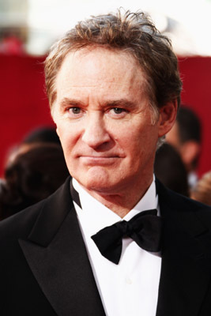
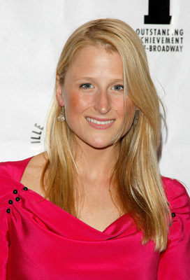

#2865 Ricki - Wie Familie so ist
Alternativ: Ricki and the Flash

 IMDB-Wertung: 5.9 / 10
IMDB-Wertung: 5.9 / 10  Metascore: 54
Metascore: 54 
Ricki hat ihren Mann und ihre drei Kinder verlassen, weil sie Karriere als Musikerin machen wollte. Nun sind 20 Jahre vergangen. Ihre Karriere ist nie richtig ins Rollen gekommen. Nachts tritt sie auf, tagsüber arbeitet sie als Kassiererin. Unvermutet ruft ihr Exmann Pete mit der Nachricht an, dass ihre gemeinsame, erwachsene Tochter psychisch am Ende ist. Also macht sich Ricki auf den Weg in die Provinz nach Indiana, um ihre Familie zu treffen, die sie kaum gesehen hat. Das Wiedersehen fällt entsprechend frostig aus. Der Oscar-prämierte Jonathan Demme setzt die Oscar-prämierte Meryl Streep in einer ebenso amüsanten wie bewegenden Musik- und Familiengeschichte in Szene. Dabei zeigt sich Demme vor allem in den mitreißenden Musikszenen auf der Höhe seiner Kunst.\r Quelle: Kino.de
Jahr: 2015
Dauer: 101 Minuten
FSK: 0
Land: USA Studio: Sony Pictures ReleasingTonspuren: DD5.1 - ,
Untertitel: Deutsch,
Auflösung: 1080p (1920x808) Größe: 8110 MB
Genre: Drama, Musik, Komödie
Regisseur:  Jonathan Demme
Jonathan Demme
Drehbuch: Diablo Cody
Soundtrack:
Darsteller:
 Meryl Streep als Ricki
Meryl Streep als Ricki- Rick Springfield als Greg
- Joe Vitale als Joe
- Ben Platt als Daniel
- Keala Settle als Sharon
- Joe Toutebon als Whitey
- Aaron Moten als Troy
- Adam Shulman als Total Foods Customer
-  Kevin Kline als Pete
- Chinasa Ogbuagu als TSA Employee
- Gus Halper als Impatient Traveler
- Cherise Boothe als Community Security Guard
-  Mamie Gummer als Julie
- Bill Irwin als Single Dad
 Ripley Sobo als Journey
Ripley Sobo als Journey- Lucy Owen als Restaurant Hostess
- Sebastian Stan als Josh
- Nick Westrate als Adam
- Hailey Gates als Emily
- Josh Tobin als Waiter
- Carmen Carrera als Hair Stylist
- Li Jun Li als Nail Clerk
- Lisa Joyce als Nicole
- John Dreher als Max's Friend
- Suzanne Lenz als Max's Friend
- Desi Domo als Max's Friend
- Audra McDonald als Maureen
- Emily Cass McDonnell als Goodwill Sales Lady
- Em Grosland als Wedding Waitress
- Charlotte Rae als Oma
- Jeff Biehl als Pete's Cousin Jeff
- Victoria Haynes als Snobby Guest
- Anna Robertson als Mother of the Bride
- Isabella Way als Bridesmaid
- Leah O'Donnell als Bridesmaid
- Katherine Crockett als Inquiring Woman
- Leasen Beth Almquist als Wedding Dancer
- Barbara Christie als Wedding Dancer
- Andrew Haserlat als Wedding Dancer
- Perri Lauren als Wedding Dancer
- Mayumi Miguel als Wedding Dancer
- William Ryall als Wedding Dancer
- Chinaza Uche als Wedding Dancer
 Marko Caka als Bartender , uncredited
Marko Caka als Bartender , uncredited Liz Celeste als Dinner Guest , uncredited
Liz Celeste als Dinner Guest , uncredited- Diablo Cody als Salt Well Regular , uncredited
 Maria Di Angelis als Herself , uncredited
Maria Di Angelis als Herself , uncredited- Scott Eliasoph als Airport Traveler , uncredited
- Mary Farah als Grocery Shopper , uncredited
- Ely Feldman als Pedestrian , uncredited
Datei: X:\2015(N-Z)\Ricki - Wie Familie so ist (2015, FSK0, 1920x808).mkv seit 27.12.2015
Festplatte: HD 2015(A-Z)
 Es gibt insgesamt 161 Filme in der Gruppe '2015(N-Z)'
Es gibt insgesamt 161 Filme in der Gruppe '2015(N-Z)'